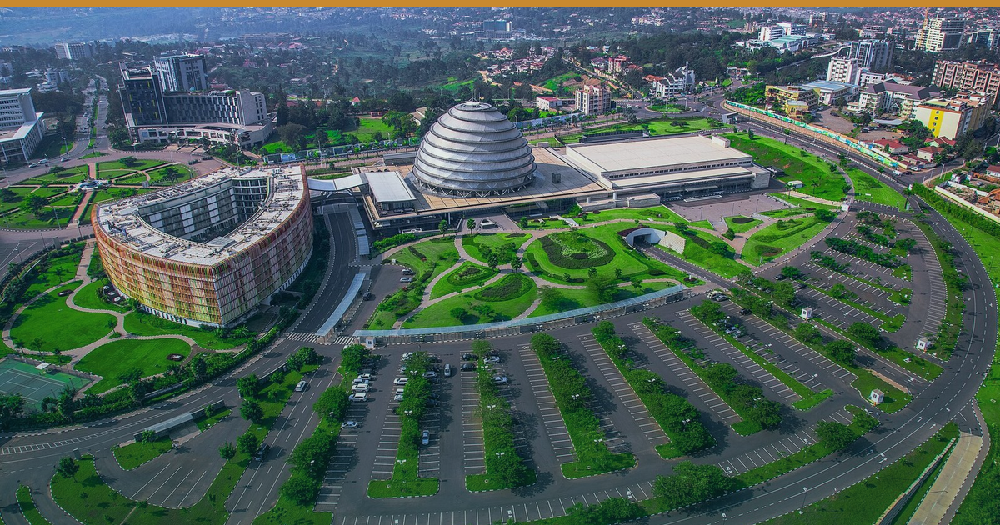

← All editions1️⃣ 🇹🇿 ZANZIBAR'S RECORD JULY WIDENED THE GAP IT SHOULD HAVE CLOSED.
🌅 EA HOSPITALITY PULSE — Morning Brief
🗓 Sunday 16 August 2026 | 🇹🇿 🇰🇪 🇷🇼
Zanzibar just posted its best July on record. The number that should worry you is May's.
━━━━━━━━━
1️⃣ 🇹🇿 ZANZIBAR'S RECORD JULY WIDENED THE GAP IT SHOULD HAVE CLOSED
107,801 visitors in July — an all-time monthly record, +9.6% on July 2025's 98,370 (OCGS, via The Citizen, 14 Aug). It was also +54.9% on June's 69,605, and 2.68× May's 40,151.
A year earlier that same step was +45.7%. The swing didn't narrow. It widened by nine points. The Maldives, on months published so far in 2026, ran 247,722 in February to 123,552 in June — 2.01× (Maldives Monetary Authority). Definitions differ, but the direction isn't in doubt: Zanzibar is getting better at selling ten weeks and no better at selling the other forty-two.
What everyone is missing: the record was disproportionately not European. Europe supplied 60,754, yet its share fell from 61.9% in June to 56.4% in July. Back out the residual and non-European arrivals grew +77.5% month-on-month, against Europe's +40.9%. The marginal guest is increasingly African, Gulf and Asian — booking shorter, later, outside European tour-operator rails. That is the only demand that doesn't obey a European school calendar, and the only demand that can flatten this curve.
🏷 Beach · Tanzania/Zanzibar · Confirmed (OCGS & MMA figures) / Inference (amplitude read)
🎯 So what: Price April–May as an unbuilt product, not a failed season. Aim shoulder inventory at the segment that just grew 77.5% — regional and Gulf, direct, short-stay, own-channel.
2️⃣ 🇹🇿 THE ROUTE EVERYONE IS FILING UNDER 'NICE TO HAVE'
Airlink starts the first-ever non-stop Cape Town–Zanzibar service on 3 October 2026 — Saturdays, year-round, E195-E2, 124 seats (Airlink, via TATO/Tourism Update, Aug 2026).
Reported as a leisure route. Read it as a seasonality instrument: year-round regional airlift from a market whose holiday calendar doesn't track Europe's. One rotation won't flatten a 2.68× curve — but it's the shape of the thing that does.
🏷 Beach · Tanzania/South Africa · Confirmed (schedule) / Inference (read)
🎯 So what: If you sell Zanzibar, get South African trade and Cape Town connecting traffic onto your rate sheet before October.
━━━━━━━━━
✅ STILL TRUE — Tanzania and Zanzibar remain US Level 3, unchanged since 31 Oct 2025 (travel.state.gov, verified 4 Aug 2026); the UK has no advisory against travel to Zanzibar. Nothing changed. Don't discount as though it had.
⚡ COST PULSE — Nairobi diesel holds at KSh 217.86/L to 14 Sep; operators carry roughly KSh 14.28/L above landed-cost parity (EPRA / Business Daily, 14 Aug).
🔗 This edition on the web: https://eahospitalitypulse.com/editions/pulse-2026-08-16-morning.html
— EA Hospitality Pulse | Daily intelligence for city, bush & beach properties
📣 Telegram (full editions) 💬 WhatsApp (daily skim) 💼 LinkedIn (the Big Read) 🗂 Every edition